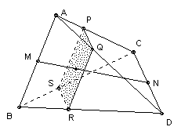

ABCD is a tetrahedron. Show that any plane through the midpoints of AB and CD divides the tetrahedron into two parts of equal volume.
Solution

Let M be the midpoint of AB, and N the midpoint of CD. Let p be the plane through AB parallel to CD. Any plane p' parallel to p which intersects the segment MN will intersect the tetrahedron in a parallelogram with center on the line MN. Any plane q through MN will pass through the center of the parallelogram and hence divide it into two equal parts. So suppose q divides the tetrahedron into two parts T and T'. We have established that the area of the intersection of p' and T is equal to the area of the intersection of p' and T'. It follows from Cavalieri's principle that T and T' have equal volume. (This is obvious if you are happy to obtain the volume by integration.)
(To see that PQRS is a parallelogram, note that PQ is parallel to CD, and RS is parallel to CD, so PQ and RS are parallel. Similarly QR and PS are parallel to AB and hence to each other.)

© John Scholes
jscholes@kalva.demon.co.uk
30 Dec 2002
Last corrected/updated 30 Dec 02